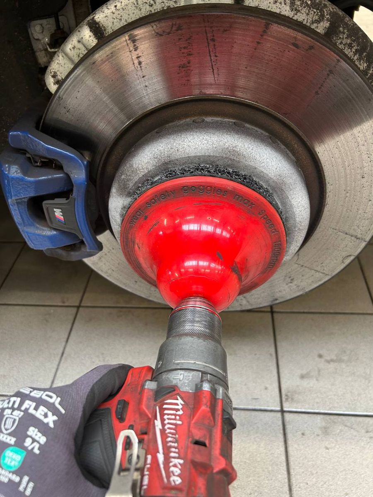

Home / Brakes and suspension
BMW Brake Pad and Rotor Replacement: How It's Done
Quick answer
Take off the wheel, undo the two bolts at the back of the caliper, remove the pad retaining hardware and take out the pads, then undo the one screw that holds the rotor and remove it. Clean the hub and everything around it, and fit the new parts in the reverse order. Brakes are a safety system, so use jack stands, tighten everything to the torque in your manual and test the brakes before you drive.

Before you start
Measure the pads first. See BMW Brake Pad Wear: How to Measure Thickness. Replace pads and rotors in pairs on the same axle, left and right together.
What you need
- Jack, jack stands and wheel chocks
- Sockets and wrenches that fit the caliper bolts
- A driver for the screw that holds the rotor
- Brake cleaner, a brush and brake grease for the metal contact points
- New pads (and the wear sensor, if the car has one) and new rotors
- A torque wrench
Safety note. Never work under a car supported only by a jack. See BMW Jack Points. Brakes are a safety system, so if you aren't sure about any step, have a shop do it.
Step by step
1. Lift the car and remove the wheel
Raise the car at the lifting points and support it on jack stands, then take the wheel off.
2. Remove the caliper
Undo the two bolts at the back of the caliper and lift it off. Hang it from the suspension with a piece of wire. Never let it hang by the brake hose.
3. Take out the pads
Take off the hardware that holds the pads, then take the pads out. Note how the clips and springs sit, or take a photo.
4. Remove the rotor
One screw holds the rotor to the hub. Undo it and the rotor comes off. If it is stuck, take your time and don't force it against the hub.
5. Clean everything
Clean the hub face, the caliper bracket and the slide pins. The photo at the top shows the hub face being cleaned with a cleaning disc on a drill. This step matters, as the next section explains.
6. Fit the new parts
Fit the new rotor and refit its screw. Put the new pads in with their hardware, with a thin film of brake grease on the metal contact points and never on the friction surface. Push the caliper piston back if the new pads need the room, and watch the brake fluid level while you do. Refit the caliper and tighten its bolts to the torque in your manual.
7. Refit the wheel and test
Refit the wheel and tighten the bolts as described in BMW Wheel Bolts: How to Tighten Them Correctly. Before you drive, press the brake pedal several times until it feels firm, then test the brakes at low speed.
Why the hub must be clean
Rust or dirt on the hub face makes the new rotor sit slightly off-flat. That can cause vibration under braking, even with brand-new parts, and it can wear the pads unevenly. It takes a few minutes to clean, and it is easy to skip.
Rear brakes and the electronic parking brake
Many cars have an electronic parking brake at the rear. On those, the rear caliper usually has to be put into service mode with a diagnostic tool before the piston can be retracted. Forcing the piston can damage the mechanism, so follow your manual or let a shop do the rear.
After the job
- Bed the pads in with a series of moderate stops, and avoid hard braking for the first drive
- Check the brake fluid level and look for leaks
- Re-check the wheel bolt torque after the first drive
- Check the brake fluid's age while you are there. See BMW Brake Fluid Change
Common mistakes
- Skipping the hub cleaning
- Greasing the friction surface of the pad
- Letting the caliper hang by the hose
- Replacing one side only
- Forgetting to press the pedal before driving
- Skipping the torque wrench
FAQ
Do I always replace the rotors with the pads?
Not always. If the rotors are smooth, thick enough and not cracked, they can stay. Worn, grooved or lipped rotors should be replaced with the pads.
Why do I need to clean the hub?
Rust or dirt on the hub face makes the new rotor sit off-flat, which can cause vibration and uneven pad wear.
Should I replace the wear sensor with the pads?
It is good practice to, even if it hasn't triggered.
Do I need to bleed the brakes after changing pads?
Usually not, if you don't open the hydraulic system. Check the fluid level and the pedal feel.
How tight should the caliper bolts be?
To the torque in your manual. Don't guess.
This guide is general information based on personal experience, not professional advice. Check your own car's manual for exact specs and read the disclaimer before starting any job.